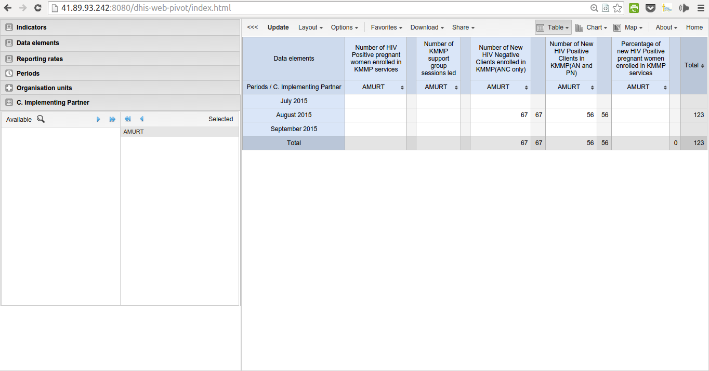

Analysis and Reports¶
Pivot Table¶
The pivot table app enables users to create pivot tables, using all available data dimensions in PHES. A pivot table is a dynamic tool for data analysis which lets you quickly summarize and arrange data according to its dimensions. Examples of data dimensions in PHES are data dimension itself (e.g data elements, indicators and events ), periods (representing the time period for whic the data represents) and the organisational hierarchy (representing the geographical location of the data). From these dimensions you can freely select dimension items to include in the pivot table. Additional dimensions can be created in PHES, using the group set functionality, to allow for different aggregation pathways, such as aggregation by “Partner” or facility type. A pivot table can arrange data dimensions on columns, rows, and as filters. When you place a data dimension on columns, the pivot table will display one column per dimension item. If you place multiple data dimensions on columns, the pivot table will display one column for all combinations of the items in the selected dimensions. When you place a data dimension on rows, the pivot table will display one row per dimension item in a similar fashion. The dimensions you select as filters will not be included in the pivot table, but will aggregate and filter the table data based on the selected filter items. The work-flow for creating a simple pivot table is: * Select dimension items in the left menu, for instance a few data elements or indicators. * Click “Layout” on the top menu and arrange the data dimensions as columns, rows, and filters. You can leave the selection as it is if desired. * Click “Update”. A pivot table similar as below will be displayed. Notice how indicators are listed on columns and periods as rows.
Dataset Reports¶
Dataset reports are printer friendly views of the data entry screen filled with either raw or aggregated data. These are only available for data sets that have custom data entry forms and not for default or section forms. You can access data set reports from Apps->Reports. A Criteria window will appear where you fill in the details for your report: * Dataset: The data set you want to display. * Reporting period: The actual period you want data for. This can be aggregated as well as raw periods. This means that you can ask for a quarterly or annual report even though the data set is collected monthly. A data set’s period type (collection frequency) is defined in data set maintenance. First select the period type (Monthly, Quarterly, Yearly etc.) in the drop down next to Prev and Next buttons, and then select one of the available periods from the dropdown list below. Use Prev and Next to jump one year back or forward. * Use data for selected unit only: Use this option if you want a report for an orgunit that has children, but only want the data collected directly for this unit and not the data collected by its children. If you want a typical aggregated report for an orgunit you do not want to tick this option. * Reporting Organisation unit: Here you select the orgunit you want the report for. This can be at any level in the hierarchy as the data will be aggregated up to this level automatically (if you do not tick the option above). When you are done filling in the report criteria you click on * Generate *. The report will appear as HTML in a printer-friendly format. Use the print and save as functions in the browser to print or save (as HTML) the report.You can also export the data set report in Excel and PDF formats.